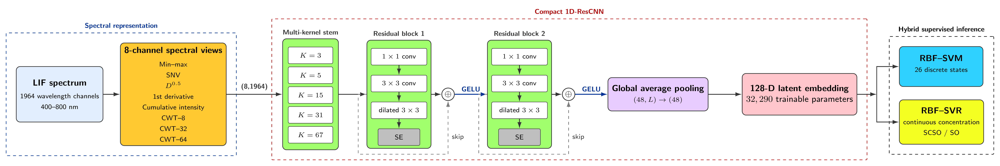

Who am I?
Department of Physics, Amirkabir University of Technology
Nima Yadollahi
I am a graduate student in Optics & Photonics with a background in machine learning and quantum information. My research interests span quantum machine learning, physics-informed neural networks, and integrated photonics.
Research
My research focuses on computational methods for physics and the application of machine learning to physical systems. I am particularly interested in quantum machine learning, neural-network surrogate models, quantum many-body systems, and experimental data analysis.
Research Interests
- Quantum Boltzmann Machines
- Neural Operators and Surrogate Modeling
- Photonic integrated circuits
- AI for Physics and Experimental Data
Current Research
Quantum Boltzmann Machines
Research on QBM training and computationally efficient approximations, including exact diagonalization, DeepONet and Fourier Neural Operator surrogate models, with emphasis on thermodynamic quantities and model optimization.
Laser-Induced Fluorescence
Machine-learning analysis of laser-induced fluorescence spectra for non-destructive assessment of oil adulteration, including spectral feature extraction and classification using neural networks.
Projects
- Quantum Machine Learning coursework and implementations
- Quantum Boltzmann Machine computational framework
- Neural-operator surrogate modeling for quantum systems
- Laser-induced fluorescence spectroscopy and machine learning
Publications
-

Laser-induced fluorescence spectroscopy coupled with physics-aware hybrid machine learning for rapid detection and quantification of hazelnut oil adulteration
A. Khalaji, N. Yadollahi, A. Bavali, A. Rahmatpanahi Journal Name, Vol., page (2026). arXiv / DOI
Contact
Department of Physics - Amirkabir University of Technology
Tehran, Iran
Email: yadollahinima83@gmail.com